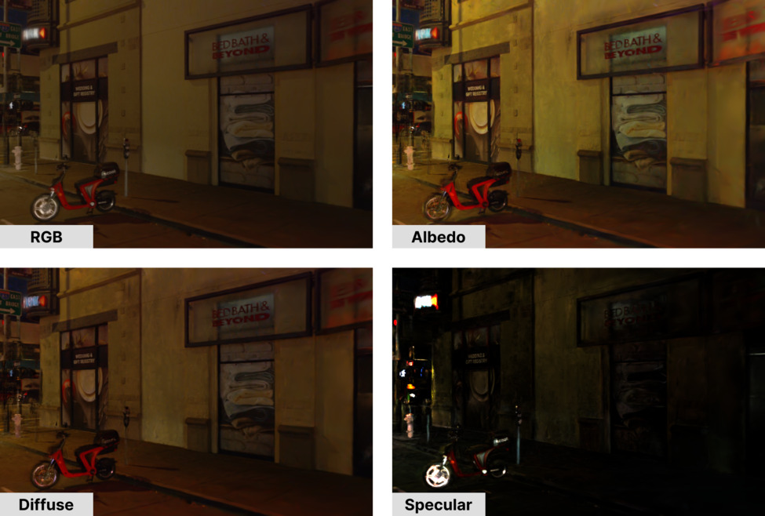
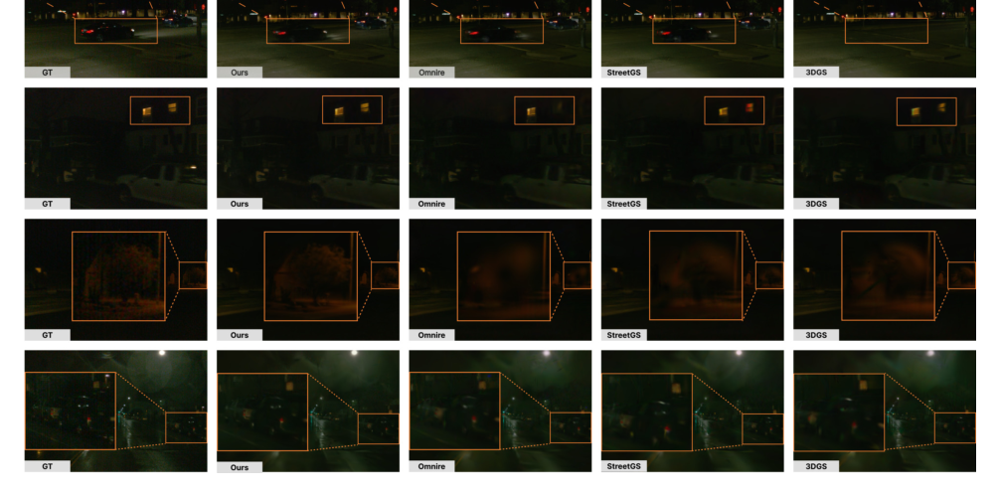
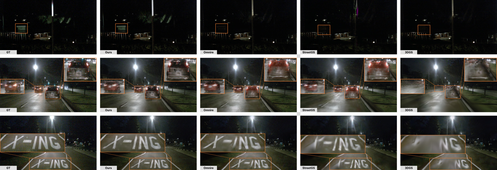
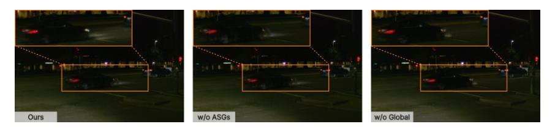
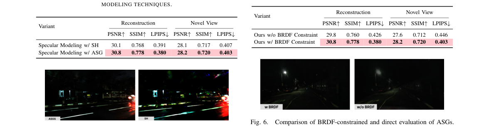
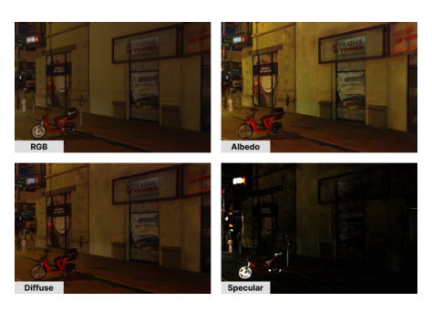

Nighttime
简单摘要
为了解决这个问题，这项工作提出了一种新颖的方法，将基于物理的渲染集成到 3DGS 中，以增强自动驾驶的夜间场景重建。因此，我们的方法提高了室外夜间驾驶场景的重建质量，同时保持实时渲染。

他们在动态驾驶场景建模方面展示了有希望的结果，同时保持了实时渲染性能。为了解决这些问题，这项工作提出了一种新颖的方法，将基于物理的渲染集成到复合场景高斯表示中，以进行自动驾驶场景重建。
核心创新
第一，为了解决这个问题，这项工作提出了一种新颖的方法，将基于物理的渲染集成到 3DGS 中，以增强自动驾驶的夜间场景重建。
第二，为了解决这些限制，我们提出了一个全局照明模块，该模块可以根据标准化时间步长和相机嵌入来预测场景照明。
第三，我们提出的夜间自动驾驶场景重建框架的概述如图：模型所示。
技术细节
虽然这种场景结构提供了自动驾驶场景的稳健表示，但我们的方法进一步集成了照明模块，以在具有挑战性的低光条件下实现逼真的重建。为了解决这些限制，我们提出了一个全局照明模块，该模块可以根据标准化时间步长和相机嵌入来预测场景照明。

3.1 预赛
3.1.1 高斯泼溅
3D 高斯泼溅 (3DGS) 将场景表示为彩色 3D 高斯图元的集合。每个高斯均由不透明度、位置、协方差矩阵（从四元数旋转和缩放向量导出）和颜色进行参数化，通常表示为球谐函数 (SH) 系数。在渲染阶段，3D 高斯曲线作为 2D 高斯曲线投影到图像平面上。
3.1.2 复合场景图结构
继之前的工作之后，我们构建了一个由三个组件组成的 3DGS 场景图。(i) 静态背景，(ii) 动态演员，以及 (iii) 天空图。虽然这种场景结构提供了自动驾驶场景的稳健表示，但我们的方法进一步集成了照明模块，以在具有挑战性的低光条件下实现逼真的重建。
3.2 方法概述
我们提出的夜间自动驾驶场景重建框架的概述如图：模型所示。我们的方法通过将基于物理的渲染与复合 3DGS 场景图集成来重建动态夜间驾驶场景。全局照明模块预测 SH 系数以对漫射照明进行建模，而每高斯 ASG 则捕获入射镜面照明。
3.3 双向反射分布函数建模
我们的照明方法利用基于物理的渲染方程来计算场景照明和高斯表面之间的相互作用。渲染方程定义如下。接下来，每个高斯基元被参数化为 ，其中除了均值和协方差（由旋转四元数和尺度 表示）之外。
3.4 全局照明模块
之前的工作使用环境贴图对全局入射光进行建模，这需要对每个渲染步骤进行采样。为了解决这些限制，我们提出了一个全局照明模块，该模块可以根据标准化时间步长和相机嵌入来预测场景照明。其中 是将入射辐射度 SH 转换为朗伯辐射度 SH 的余弦核卷积因子，表示在高斯法线下评估的真实 SH 基。
3.5 镜面光建模
从方法链路看，系统首先处理的是：夜间驾驶场景通常包含人工照明和逆反射器的强烈反射。
在训练和推理阶段，论文还额外考虑了：每个高斯被分配一组 ASG 波瓣（在我们的例子中为四个），并且它们的镜面反射贡献在渲染期间通过 BRDF 约束的 PBR 进行评估。
3.6 最终灯光和色调映射
从方法链路看，系统首先处理的是：将漫反射和镜面反射光照相加，生成 HDR 中每个高斯的最终重新光照值。
接下来真正起关键作用的是：由于图像像素值以 LDR 值表示，因此我们应用 Reinhard 色调映射来生成 LDR 值。这样安排直接带来的收益是：结果作为用于标准光栅化的每高斯颜色。
3.7 优化
为了获得真实的光照效果，准确的表面法线对于每个高斯来说至关重要。在光栅化期间，累积每高斯法线以生成渲染的法线贴图。此外，我们从渲染的深度图导出基于深度的法线，并计算置信度权重来衡量与先前法线之间的一致性。
$$ G(x) = \exp\left(-\tfrac{1}{2}(x-\mu)^{T}\Sigma^{-1}(x-\mu)\right). $$
这条式子描述的是单个高斯基元在空间中的响应或密度分布：离中心越近，贡献越大；协方差则决定分布在不同方向上的扩张方式。它直接影响后续投影和渲染时每个高斯的覆盖范围。
$$ C = \sum_{i \in N} c_i \alpha_i \prod_{j=1}^{i-1} (1 - \alpha_j), $$
这条式子给出了论文中的一条核心计算关系。理解时可以先看左侧最终想得到什么结果，再看右侧的 C、in、N、i 等量如何共同决定这个结果在方法链路中的作用。
$$ L_{o}(\boldsymbol {\omega _{o}}, \boldsymbol {x}) = \int _{\Omega }f(\boldsymbol {\omega _{o}}, \boldsymbol {\omega _{i}}, \boldsymbol {x})L_{i}(\boldsymbol {\omega _{i}}, \boldsymbol {x})(\boldsymbol {\omega _{i}}\cdot \boldsymbol {n})d\boldsymbol {\omega _{i}}, \label {eq:rendering_equation} $$
这条式子对应的方法环节是：additional material attributes to produce HDR radiance, which is tone-mapped to LDR via Reinhard and rendered with the standard differentiable 3DGS rasterizer。BRDF Modeling Our lighting method utilizes the physically based 渲染 equation to compute the interaction between the lighting of the scene and the Gaussian。从作用上看，它是在把这一环节写成可直接计算的表示、投影规则或优化目标，方便后续模块继续使用。
$$ L_d = \frac{b}{\pi}\sum_{l=0}^{2}A_{l}\sum_{m=-l}^{l}c^{l}_{m}Y^{l}_{m}(n), $$
这条式子给出了论文中的一条核心计算关系。理解时可以先看左侧最终想得到什么结果，再看右侧的 b、pi、l、l 等量如何共同决定这个结果在方法链路中的作用。
$$ G(v; [x, y, z], [\lambda, \mu], c) = c \cdot S(v; z) \cdot e^{-\lambda (v \cdot x)^2 - \mu (v \cdot y)^2}, $$
这条式子对应的方法环节是：Specular Light Modeling Nighttime driving scenes often contain artificial lighting and intense reflections from retro reflectors。To better handle these situations, we employ ASGs within our 渲染 pipeline, as they have been shown to capture specular highlights more effectively than SH-based approaches。从作用上看，它是在把这一环节写成可直接计算的表示、投影规则或优化目标，方便后续模块继续使用。
$$ f_s(w_o, w_i) = \frac{D(h;r) \cdot F(w_o, h; b, m) \cdot G(w_i, w_o, h; r)}{(n \cdot w_i) \cdot (n \cdot w_o)}, $$
这条式子对应的方法环节是：a latent representation passed to an MLP for the final RGB contribution like , our framework uses ASGs to model incident specular lighting。Each Gaussian is assigned a set of ASG lobes (four in our case), and their specular contribution is evaluated during 渲染 via a BRDF-constrained PBR。从作用上看，它是在把这一环节写成可直接计算的表示、投影规则或优化目标，方便后续模块继续使用。
$$ \begin{split} L_s &= G(\omega_i,\omega_0,h; r) \cdot F(\omega_o,h; b,m) \cdot \sum_{i} A_i \cdot s_i \cdot \\ &ASG_i\!\left(w_r,[x_i,y_i,z_i], \left[\tfrac{\nu\lambda_i}{\nu+\lambda_i}, \tfrac{\nu\mu_i}{\nu+\mu_i}\right],\, a_{\text{ndf}} \tfrac{\pi}{\sqrt{(\nu+\lambda_i)(\nu+\mu_i)}}\right), \end{split} $$
这条式子对应的方法环节是：tion where the represents the half vector between incoming and outcoming radiance, and , and indicate the normal distribution function, the Fresnel term, and the 几何 term respectively。As the normal distribution can be modeled as a spherical Gaussian (SG) , the convolution of the SG and ASG product inside the PBR。从作用上看，它是在把这一环节写成可直接计算的表示、投影规则或优化目标，方便后续模块继续使用。
$$ L_{\text{HDR}} = L_{d} + L_{s}. $$
这条式子给出了论文中的一条核心计算关系。理解时可以先看左侧最终想得到什么结果，再看右侧的 HDR 等量如何共同决定这个结果在方法链路中的作用。
实验结论
实验部分主要围绕 对于评估指标，接下来，我们评估像素级的 PSNR、结构级的 SSIM 和感知相似性的 LPIPS 展开。结果表明，与第二好的基线 OmniRe 相比，这对应于 PSNR 大约 1.0 dB 的改进以及 LPIPS 的显着降低，表明重建更加清晰和稳健。
| Method | Reconstruction | Novel View | ||||
|---|---|---|---|---|---|---|
| (lr)2-4(lr)5-7 | PSNR | SSIM | LPIPS | PSNR | SSIM | LPIPS |
| 3DGS | 30.1 | 0.755 | 0.487 | 28.3 | 0.720 | 0.503 |
| StreetGaussians | 30.5 | 0.757 | 0.482 | 28.5 | 0.722 | 0.499 |
| OmniRe | 31.0 | 0.768 | 0.455 | 28.5 | 0.718 | 0.481 |
| Ours | 31.9 | 0.781 | 0.441 | 28.8 | 0.720 | 0.467 |
| Method | Reconstruction | Novel View | ||||
|---|---|---|---|---|---|---|
| (lr)2-4(lr)5-7 | PSNR | SSIM | LPIPS | PSNR | SSIM | LPIPS |
| 3DGS | 27.6 | 0.741 | 0.378 | 26.4 | 0.704 | 0.382 |
| StreetGaussians | 28.3 | 0.749 | 0.364 | 26.9 | 0.709 | 0.376 |
| OmniRe | 28.7 | 0.760 | 0.335 | 26.9 | 0.705 | 0.351 |
| Ours | 29.7 | 0.775 | 0.319 | 27.7 | 0.718 | 0.338 |





4.1 数据集
实验部分主要围绕 因此，我们从每个数据集中选择 11 个弱光驾驶场景进行实验 展开。结果表明，具体来说，我们对 nuScene 使用场景 754、763、774、776、780、781、782、783、784、785 和 790，场景 007、012、015、018、030、038、051、099、106、 129，Waymo 166。
4.2 实施细节
实验部分主要围绕 在我们的实验中，每个驾驶场景都使用 LiDAR 点云进行初始化，并辅以以下均匀采样点 展开。结果表明，使用 Adam 优化器对模型进行 40,000 次迭代训练。
4.3 基线
实验部分主要围绕 我们将我们的框架与最近最先进的动态城市场景重建 3DGS 方法进行比较 展开。结果表明，OmniRe 和 StreetGaussians ，我们还包括 3DGS 作为比较的基线。
4.4 Waymo 上的结果
实验部分主要围绕 具体来说，对于场景重建，我们的模型实现了 31.9 dB 的 PSNR、0.781 的 SSIM 和 0.441 的 LPIPS，超过了任何其他现有模型 展开。结果表明，我们将这些改进归功于我们分解的照明模块。
4.5 nuScenes 上的结果
实验部分主要围绕 尽管分辨率较低，但我们的模型在新颖的视图合成和场景重建的所有三个指标上都表现出了强大的性能 展开。结果表明，具体来说，我们的框架在场景重建方面实现了 29.7 dB 的 PSNR、0.775 的 SSIM 和 0.319 的 LPIPS，优于所有先前最先进的框架。
4.6 消融研究
4.6.1 光照分解的有效性
实验部分主要围绕 如果没有全局照明，模型很难保持整个场景的一致性，从而导致 PSNR 和 SSIM 降低 展开。结果表明，如果没有基于 ASG 的镜面建模，车辆前灯和反光建筑窗户等局部高光就会丢失，导致感知质量下降（更高的 LPIPS）。
4.6.2 镜面建模中 ASG 与 SH 的分析
实验部分主要围绕 定性地，如图所示：sh，我们观察到 SH 无法捕捉锐利的镜面高光，而是产生更平滑、过度漫反射的反射 展开。结果表明，ASG 具有各向异性，可以更准确地再现高频镜面反射效果，使其更适合镜面反射建模。
4.6.3 BRDF约束分析
实验部分主要围绕 具体来说，PSNR 下降 1.0 dB，LPIPS 显着增加 展开。
对比结果表明，此外，BRDF 约束和 ASG 直接评估的比较如图：brdf 所示。进一步结合定性现象和消融分析，可以看出：这证实了使用基于物理的 BRDF 框架约束镜面反射分量对于产生真实且物理一致的光照至关重要，而不是像图：brdf 中那样任意高光模式。
4.6.4 照明组件分解的可视化
实验部分主要围绕 我们在图：结果中展示了照明组件分解的可视化 展开。结果表明，我们可以看到反照率代表了没有任何光照或阴影的场景的基色。
理解评价
如果把这篇论文放回问题背景里看，它真正的价值在于：为了解决这个问题，这项工作提出了一种新颖的方法，将基于物理的渲染集成到 3DGS 中，以增强自动驾驶的夜间场景重建。这说明作者不是只补一个局部模块，而是在重新组织问题该怎样被解决。
最能支撑这个判断的，还是实验给出的证据：因此，我们的方法提高了室外夜间驾驶场景的重建质量，同时保持实时渲染。换句话说，这些设计并不只是概念上更完整，而是实实在在改变了最终结果。
当然，它离真正成熟的方案还有距离：为了解决这些限制，我们提出了一个全局照明模块，该模块可以根据标准化时间步长和相机嵌入来预测场景照明。后续更值得继续推进的方向，是 与第二佳基线 OmniRe 相比，这对应于 PSNR 大约 1.0 dB 的改进以及 LPIPS 的显着降低，表明重建更加清晰和稳健。